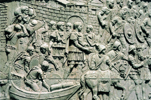
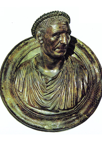
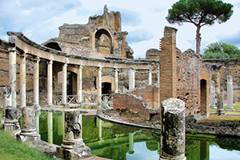

Lezione 4  L'Impero romano
L'Impero romano

-
220
450
-
260
340
-
385
590
-
240
320
-
180
200
-
420
520

COLONNA TRAIANA
Per celebrare la conquista della Dacia Traiano fa erigere a Roma la colonna che porta il suo nome: un colossale monumento di quaranta metri di altezza la cui superficie è rivestita da un fregio a spirale interamente scolpito con episodi che narrano la campagna militare.
TRAIANO
Lo spagnolo Traiano è il primo imperatore non italico (98-117): in questo busto lo vediamo ritratto in età avanzata. Di origine spagnola, riprende la politica espansionistica di Roma. Sotto il suo governo l’Impero raggiunge la massima espansione territoriale. Con Traiano e con gli Antonini l’Impero vive un buon livello di coesione civile, di prosperità materiale e di buona amministrazione. Sulla fine del secolo iniziano tuttavia le invasioni barbariche e le crisi militari.GERUSALEMME
Tra il 130 e il 135 Adriano pone fine a una rivolta ebraica con una dura repressione, che causa migliaia di morti e la seconda distruzione di Gerusalemme. Sulle rovine della città viene fondata la colonia romana Elia Capitolina.
ROMA
Adriano passa gli ultimi anni della sua vita in una villa sui colli di Tivoli, villa Adriana. A Roma fa costruire il mausoleo di Castel sant’Angelo, successivamente adibito a fortezza papale.GALLIE
Nerva introduce un nuovo criterio di successione, il principio dell’adozione, basato sul merito: in questo modo rafforza i contesti sociali periferici, e favorisce l’ascesa delle province e delle Gallie in particolare, che sono tra le province più ricche.EGITTO
Egitto e Sicilia sono i “granai dell’Impero”, perchè è qui che si coltiva e si distribuisce in tutto l'Impero la maggiore quantità di grano.